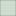

<!DOCTYPE html>
<html lang="en">
  <head>
    <meta charset="utf-8" />
    <meta http-equiv="X-UA-Compatible" content="IE=edge" />
    <meta
      name="viewport"
      content="initial-scale=1,user-scalable=no,maximum-scale=1,width=device-width"
    />
    <meta name="mobile-web-app-capable" content="yes" />
    <meta name="apple-mobile-web-app-capable" content="yes" />
    <link rel="stylesheet" href="css/leaflet.css" />
    <link rel="stylesheet" href="css/L.Control.Locate.min.css" />
    <link rel="stylesheet" href="css/qgis2web.css" />
    <link rel="stylesheet" href="css/fontawesome-all.min.css" />
    <link rel="stylesheet" href="css/leaflet-search.css" />
    <link rel="stylesheet" href="css/leaflet-control-geocoder.Geocoder.css" />
    <link rel="stylesheet" href="css/leaflet-measure.css" />
    <style>
      html,
      body,
      #map {
        width: 100%;
        height: 100%;
        padding: 0;
        margin: 0;
      }
    </style>
    <title>Lokasi Rumah Sakit Di Bandar Lampung</title>
  </head>
  <body>
    <div id="map"></div>
    <script src="js/qgis2web_expressions.js"></script>
    <script src="js/leaflet.js"></script>
    <script src="js/L.Control.Locate.min.js"></script>
    <script src="js/leaflet.rotatedMarker.js"></script>
    <script src="js/leaflet.pattern.js"></script>
    <script src="js/leaflet-hash.js"></script>
    <script src="js/Autolinker.min.js"></script>
    <script src="js/rbush.min.js"></script>
    <script src="js/labelgun.min.js"></script>
    <script src="js/labels.js"></script>
    <script src="js/leaflet-control-geocoder.Geocoder.js"></script>
    <script src="js/leaflet-measure.js"></script>
    <script src="js/leaflet-search.js"></script>
    <script src="data/ADMINISTRASIKECAMATAN_AR_50K_1.js"></script>
    <script src="data/RumahSakitKhusus_2.js"></script>
    <script src="data/RumahSakitUmum_3.js"></script>
    <script>
      var map = L.map("map", {
        zoomControl: true,
        maxZoom: 28,
        minZoom: 1,
      }).fitBounds([
        [-5.447073175599077, 105.23750214207132],
        [-5.401475326650574, 105.29622734953244],
      ]);
      var hash = new L.Hash(map);
      map.attributionControl.setPrefix(
        '<a href="https://github.com/tomchadwin/qgis2web" target="_blank">qgis2web</a> &middot; <a href="https://leafletjs.com" title="A JS library for interactive maps">Leaflet</a> &middot; <a href="https://qgis.org">QGIS</a>'
      );
      var autolinker = new Autolinker({
        truncate: { length: 30, location: "smart" },
      });
      L.control.locate({ locateOptions: { maxZoom: 19 } }).addTo(map);
      var measureControl = new L.Control.Measure({
        position: "topleft",
        primaryLengthUnit: "meters",
        secondaryLengthUnit: "kilometers",
        primaryAreaUnit: "sqmeters",
        secondaryAreaUnit: "hectares",
      });
      measureControl.addTo(map);
      document.getElementsByClassName(
        "leaflet-control-measure-toggle"
      )[0].innerHTML = "";
      document.getElementsByClassName(
        "leaflet-control-measure-toggle"
      )[0].className += " fas fa-ruler";
      var bounds_group = new L.featureGroup([]);
      function setBounds() {}
      map.createPane("pane_OSMStandard_0");
      map.getPane("pane_OSMStandard_0").style.zIndex = 400;
      var layer_OSMStandard_0 = L.tileLayer(
        "http://tile.openstreetmap.org/{z}/{x}/{y}.png",
        {
          pane: "pane_OSMStandard_0",
          opacity: 1.0,
          attribution:
            '<a href="https://www.openstreetmap.org/copyright">© OpenStreetMap contributors, CC-BY-SA</a>',
          minZoom: 1,
          maxZoom: 28,
          minNativeZoom: 0,
          maxNativeZoom: 19,
        }
      );
      layer_OSMStandard_0;
      map.addLayer(layer_OSMStandard_0);
      function pop_ADMINISTRASIKECAMATAN_AR_50K_1(feature, layer) {
        var popupContent =
          '<table>\
                    <tr>\
                        <th scope="row">Nama Kecam</th>\
                        <td>' +
          (feature.properties["Nama Kecam"] !== null
            ? autolinker.link(feature.properties["Nama Kecam"].toLocaleString())
            : "") +
          '</td>\
                    </tr>\
                    <tr>\
                        <th scope="row">Jenis</th>\
                        <td>' +
          (feature.properties["Jenis"] !== null
            ? autolinker.link(feature.properties["Jenis"].toLocaleString())
            : "") +
          '</td>\
                    </tr>\
                    <tr>\
                        <th scope="row">LCODE</th>\
                        <td>' +
          (feature.properties["LCODE"] !== null
            ? autolinker.link(feature.properties["LCODE"].toLocaleString())
            : "") +
          '</td>\
                    </tr>\
                    <tr>\
                        <th scope="row">Kabupaten</th>\
                        <td>' +
          (feature.properties["Kabupaten"] !== null
            ? autolinker.link(feature.properties["Kabupaten"].toLocaleString())
            : "") +
          '</td>\
                    </tr>\
                    <tr>\
                        <th scope="row">Provinsi</th>\
                        <td>' +
          (feature.properties["Provinsi"] !== null
            ? autolinker.link(feature.properties["Provinsi"].toLocaleString())
            : "") +
          '</td>\
                    </tr>\
                    <tr>\
                        <th scope="row">Shape_Leng</th>\
                        <td>' +
          (feature.properties["Shape_Leng"] !== null
            ? autolinker.link(feature.properties["Shape_Leng"].toLocaleString())
            : "") +
          '</td>\
                    </tr>\
                    <tr>\
                        <th scope="row">Shape_Area</th>\
                        <td>' +
          (feature.properties["Shape_Area"] !== null
            ? autolinker.link(feature.properties["Shape_Area"].toLocaleString())
            : "") +
          "</td>\
                    </tr>\
                </table>";
        layer.bindPopup(popupContent, { maxHeight: 400 });
      }

      function style_ADMINISTRASIKECAMATAN_AR_50K_1_0() {
        return {
          pane: "pane_ADMINISTRASIKECAMATAN_AR_50K_1",
          opacity: 1,
          color: "rgba(35,35,35,0.406)",
          dashArray: "",
          lineCap: "butt",
          lineJoin: "miter",
          weight: 1.0,
          fill: true,
          fillOpacity: 1,
          fillColor: "rgba(114,155,111,0.406)",
          interactive: true,
        };
      }
      map.createPane("pane_ADMINISTRASIKECAMATAN_AR_50K_1");
      map.getPane("pane_ADMINISTRASIKECAMATAN_AR_50K_1").style.zIndex = 401;
      map.getPane("pane_ADMINISTRASIKECAMATAN_AR_50K_1").style[
        "mix-blend-mode"
      ] = "normal";
      var layer_ADMINISTRASIKECAMATAN_AR_50K_1 = new L.geoJson(
        json_ADMINISTRASIKECAMATAN_AR_50K_1,
        {
          attribution: "",
          interactive: true,
          dataVar: "json_ADMINISTRASIKECAMATAN_AR_50K_1",
          layerName: "layer_ADMINISTRASIKECAMATAN_AR_50K_1",
          pane: "pane_ADMINISTRASIKECAMATAN_AR_50K_1",
          onEachFeature: pop_ADMINISTRASIKECAMATAN_AR_50K_1,
          style: style_ADMINISTRASIKECAMATAN_AR_50K_1_0,
        }
      );
      bounds_group.addLayer(layer_ADMINISTRASIKECAMATAN_AR_50K_1);
      map.addLayer(layer_ADMINISTRASIKECAMATAN_AR_50K_1);
      function pop_RumahSakitKhusus_2(feature, layer) {
        var popupContent =
          '<table>\
                    <tr>\
                        <th scope="row">RumahSakit</th>\
                        <td>' +
          (feature.properties["RumahSakit"] !== null
            ? autolinker.link(feature.properties["RumahSakit"].toLocaleString())
            : "") +
          '</td>\
                    </tr>\
                    <tr>\
                        <th scope="row">LCODE</th>\
                        <td>' +
          (feature.properties["LCODE"] !== null
            ? autolinker.link(feature.properties["LCODE"].toLocaleString())
            : "") +
          '</td>\
                    </tr>\
                    <tr>\
                        <th scope="row">Jenis</th>\
                        <td>' +
          (feature.properties["Jenis"] !== null
            ? autolinker.link(feature.properties["Jenis"].toLocaleString())
            : "") +
          '</td>\
                    </tr>\
                    <tr>\
                        <th scope="row">JPLYRS</th>\
                        <td>' +
          (feature.properties["JPLYRS"] !== null
            ? autolinker.link(feature.properties["JPLYRS"].toLocaleString())
            : "") +
          '</td>\
                    </tr>\
                    <tr>\
                        <th scope="row">Foto</th>\
                        <td>' +
          (feature.properties["Foto"] !== null
            ? ''
            : "") +
          "</td>\
                    </tr>\
                </table>";
        layer.bindPopup(popupContent, { maxHeight: 400 });
      }

      function style_RumahSakitKhusus_2_0() {
        return {
          pane: "pane_RumahSakitKhusus_2",
          rotationAngle: 0.0,
          rotationOrigin: "center center",
          icon: L.icon({
            iconUrl: "markers/health_hospital_emergency.svg",
            iconSize: [16.72, 16.72],
          }),
          interactive: true,
        };
      }
      map.createPane("pane_RumahSakitKhusus_2");
      map.getPane("pane_RumahSakitKhusus_2").style.zIndex = 402;
      map.getPane("pane_RumahSakitKhusus_2").style["mix-blend-mode"] = "normal";
      var layer_RumahSakitKhusus_2 = new L.geoJson(json_RumahSakitKhusus_2, {
        attribution: "",
        interactive: true,
        dataVar: "json_RumahSakitKhusus_2",
        layerName: "layer_RumahSakitKhusus_2",
        pane: "pane_RumahSakitKhusus_2",
        onEachFeature: pop_RumahSakitKhusus_2,
        pointToLayer: function (feature, latlng) {
          var context = {
            feature: feature,
            variables: {},
          };
          return L.marker(latlng, style_RumahSakitKhusus_2_0(feature));
        },
      });
      bounds_group.addLayer(layer_RumahSakitKhusus_2);
      map.addLayer(layer_RumahSakitKhusus_2);
      function pop_RumahSakitUmum_3(feature, layer) {
        var popupContent =
          '<table>\
                    <tr>\
                        <th scope="row">RumahSakit</th>\
                        <td>' +
          (feature.properties["RumahSakit"] !== null
            ? autolinker.link(feature.properties["RumahSakit"].toLocaleString())
            : "") +
          '</td>\
                    </tr>\
                    <tr>\
                        <th scope="row">LCODE</th>\
                        <td>' +
          (feature.properties["LCODE"] !== null
            ? autolinker.link(feature.properties["LCODE"].toLocaleString())
            : "") +
          '</td>\
                    </tr>\
                    <tr>\
                        <th scope="row">Jenis</th>\
                        <td>' +
          (feature.properties["Jenis"] !== null
            ? autolinker.link(feature.properties["Jenis"].toLocaleString())
            : "") +
          '</td>\
                    </tr>\
                    <tr>\
                        <th scope="row">JPLYRS</th>\
                        <td>' +
          (feature.properties["JPLYRS"] !== null
            ? autolinker.link(feature.properties["JPLYRS"].toLocaleString())
            : "") +
          '</td>\
                    </tr>\
                    <tr>\
                        <th scope="row">foto</th>\
                        <td>' +
          (feature.properties["foto"] !== null
            ? ''
            : "") +
          "</td>\
                    </tr>\
                </table>";
        layer.bindPopup(popupContent, { maxHeight: 400 });
      }

      function style_RumahSakitUmum_3_0() {
        return {
          pane: "pane_RumahSakitUmum_3",
          rotationAngle: 0.0,
          rotationOrigin: "center center",
          icon: L.icon({
            iconUrl: "markers/cross.svg",
            iconSize: [15.2, 15.2],
          }),
          interactive: true,
        };
      }
      map.createPane("pane_RumahSakitUmum_3");
      map.getPane("pane_RumahSakitUmum_3").style.zIndex = 403;
      map.getPane("pane_RumahSakitUmum_3").style["mix-blend-mode"] = "normal";
      var layer_RumahSakitUmum_3 = new L.geoJson(json_RumahSakitUmum_3, {
        attribution: "",
        interactive: true,
        dataVar: "json_RumahSakitUmum_3",
        layerName: "layer_RumahSakitUmum_3",
        pane: "pane_RumahSakitUmum_3",
        onEachFeature: pop_RumahSakitUmum_3,
        pointToLayer: function (feature, latlng) {
          var context = {
            feature: feature,
            variables: {},
          };
          return L.marker(latlng, style_RumahSakitUmum_3_0(feature));
        },
      });
      bounds_group.addLayer(layer_RumahSakitUmum_3);
      map.addLayer(layer_RumahSakitUmum_3);
      var title = new L.Control();
      title.onAdd = function (map) {
        this._div = L.DomUtil.create("div", "info");
        this.update();
        return this._div;
      };
      title.update = function () {
        this._div.innerHTML = "<h2>Lokasi Rumah Sakit Di Bandar Lampung</h2>";
      };
      title.addTo(map);
      var osmGeocoder = new L.Control.Geocoder({
        collapsed: true,
        position: "topleft",
        text: "Search",
        title: "Testing",
      }).addTo(map);
      document.getElementsByClassName(
        "leaflet-control-geocoder-icon"
      )[0].className += " fa fa-search";
      document.getElementsByClassName(
        "leaflet-control-geocoder-icon"
      )[0].title += "Search for a place";
      var baseMaps = {};
      L.control
        .layers(
          baseMaps,
          {
            ' Rumah Sakit Umum':
              layer_RumahSakitUmum_3,
            ' Rumah Sakit Khusus':
              layer_RumahSakitKhusus_2,
            ' ADMINISTRASIKECAMATAN_AR_50K':
              layer_ADMINISTRASIKECAMATAN_AR_50K_1,
            "OSM Standard": layer_OSMStandard_0,
          },
          { collapsed: false }
        )
        .addTo(map);
      setBounds();
      map.addControl(
        new L.Control.Search({
          layer: layer_RumahSakitKhusus_2,
          initial: false,
          hideMarkerOnCollapse: true,
          propertyName: "RumahSakit",
        })
      );
      document.getElementsByClassName("search-button")[0].className +=
        " fa fa-binoculars";
    </script>
  </body>
</html>
